最新情報
- 音声処理
- 画像処理
- 知能ロボティクス
- 2024年度～2026年度：日本学術振興会 科学研究費助成事業 若手研究「遠隔医療を想定した構音障害診断システム基盤技術の構築」
- 2023年度：小野音響学研究助成基金「遠隔医療を想定した通話音声を介する音声言語障がい診断システムの開発」
- 2023年度：内藤科学技術振興財団 研究助成「大規模植物工場を想定した工場野菜の収穫量予測システムの開発」
- IEEE
- 電子情報通信学会
- 計測自動制御学会
- 情報処理学会
- 日本音響学会
- 日本音響学会
- IEEE Access
- IEEE/ACM Transactions on Audio, Speech, and Language Processing
- IEICE Transactions on Fundamentals of Electronics, Communications and Computer Sciences
- The Journal of the Acoustical Society of America
- 2017年度：大阪大学基礎工学部 知能システム学実験A（デジタル信号処理） ティーチング・アシスタント
- 2019年度：大阪大学 学問への扉（音と画像のデジタル処理） ティーチング・アシスタント
- 2019年度：大阪大学大学院基礎工学研究科 留学生チューター
- 2019年度：大阪大学基礎工学部 知能システム学実験B（アナログ回路） ティーチング・フェロー
- 2021年度：大阪大学 令和3年度次世代挑戦的研究者育成プロジェクト リサーチ・アシスタント
- 2024年度：大阪大学基礎工学部 基礎工学PBL（知能システム学）
- 2024年度：大阪大学基礎工学部 知能システム学ゼミナール
- 2024年度：大阪大学基礎工学部 知能システム学実験B（アナログ回路）
- 2025年度：立命館大学情報理工学部 プログラミング演習１
- 2025年度：立命館大学情報理工学部 プログラミング演習２
- 2025年度：立命館大学情報理工学部 実世界情報実験２
- 2025年度：立命館大学情報理工学部 実世界情報演習３
-
細田 侑也, 島袋 歩, 後藤 仁志情報処理学会論文誌, vol. 66, no. 1, pp. 129-138, 2025.
-
Y. Hosoda, G. Bilguun, J. Oboshi and H. GotoIEEE Access, vol. 12, pp. 185557-185566, 2024.(Open Access)
-
Y. Hosoda, T. Tada, H. GotoIEEE Access, vol. 12, pp. 97226-97234, 2024.(Open Access)
-
Y. Hosoda, A. Kawamura, Y. IiguniIEEE/ACM Transactions on Audio, Speech, and Language Processing, vol. 31, pp. 2067-2078, 2023.(Open Access)( Matlab code)
-
Y. Hosoda, A. Kawamura, Y. IiguniIEICE Transactions on Fundamentals of Electronics, Communications and Computer Sciences, vol. E105-A, no. 4, pp. 664-672, 2022.(Open Access)
-
Y. Hosoda, A. Kawamura, Y. IiguniCircuits, Systems, and Signal Processing, vol. 41, pp. 2290-2307, 2022.(Open Access)( Matlab code)
-
Y. Hosoda, A. Kawamura, Y. IiguniIEICE Transactions on Fundamentals of Electronics, Communications and Computer Sciences, vol. E103-A, no. 3, pp. 629-630, 2020.
-
A. Okumoto, A. Shimabuku, J. Goran, Y. Hosoda, T. Yoneyama, H. Tomitaka, Y. Usami, H. Gotoin Proceedings of CIGR The XX CIGR World Congress 2022, Kyoto, Japan, Dec. 2022.Yuki Ito, Y. Hosoda, Hitoshi Goto, Seitaro Toda, Kotaro Takayamain Proceedings of CIGR The XX CIGR World Congress 2022, Kyoto, Japan, Dec. 2022.Y. Hosoda, A. Kawamura, Y. Iiguniin Proceedings of the 13th Asia Pacific Signal and Information Processing Association Annual Summit and Conference (APSIPA ASC 2021), Tokyo, Japan, Dec. 2021 (online).( Matlab code)Y. Hosoda, A. Kawamura, Y. Iiguniin Proceedings of the 29th European Signal Processing Conference (EUSIPCO 2021), Dublin, Ireland, Aug. 2021 (online).( Matlab code)Y. Hosoda, A. Kawamura, Y. Iiguniin Proceedings of 2018 International Symposium on Nonlinear Theory and its Applications (NOLTA 2018), Tarragona, Spain, Nov. 2018.
国内学会（査読なし）
-
遠藤 優貴, Nguyen Tri Tung Nguyen, 細田 侑也, 李 周浩,"介護訓練ロボットにおけるVR空間を用いたフィードバックシステムの提案,"第30回日本バーチャルリアリティ学会大会, 2025年9月.
-
錦織 勇飛, Bui Huy Hoang, 細田 侑也, 李 周浩,"遠隔操作ロボットを利用した現実空間拡張コンテンツ「R-Metaverse」- 第4報 ー音声システムがソーシャルプレゼンスに与える影響の調査ー,"第30回日本バーチャルリアリティ学会大会, 2025年9月.
-
戸叶 遥斗, 細田 侑也,"脳性麻痺による構音障害患者のための音声認識システムにおける発話特性の比較検,"日本音響学会2025年秋季研究発表会, 2025年9月.
-
Angga Rahagiyanto, Yuya Hosoda, Joo-Ho Lee,"TriSyNMF: Efficient Feature Extraction from Low-Density sEMG for Gesture Classification,"第43回日本ロボット学会学術講演会, 2025年9月.
-
劉 沐恩, 細田 侑也, 李 周浩,"知能化空間内のロボットによる家具の再配置,"第43回日本ロボット学会学術講演会, 2025年9月.
-
清水 郁博, 細田 侑也, 李 周浩,"ロボットの方向転換遅延を考慮したマルチエージェント経路計画アルゴリズム,"第43回日本ロボット学会学術講演会, 2025年9月.
-
大島 隆太郎, 細田 侑也, 飯國 洋二,"大規模言語モデルを用いた音声コンテンツの有害発言マスキング,"情報処理学会 第87回全国大会, 2025年3月.（学生奨励賞）
-
戸叶 遥斗, 細田 侑也, 飯國 洋二,"構音障害における発話特性の再現と音声認識モデルへの影響の解明,"情報処理学会 第87回全国大会, 2025年3月. （学生奨励賞）
-
小林 寧生, 細田 侑也, 飯國 洋二,"統合型生成対向ネットワークを用いた低照度・低解像度画像に対する画像強調モデルの開発,"情報処理学会 第87回全国大会, 2025年3月.
-
Yang Tingcheng, 細田 侑也, 若林 佑幸, 北岡 教英,"LSTMに基づいたL2学習者の日本語発音スコアリング,"情報処理学会 第86回全国大会, 2024年3月.
-
BILGUUN GANZURKH, 細田 侑也, 大星 仁, 後藤 仁志,"画像類似度に基づく部品組み立て式3D植物モデルの生成,"情報処理学会 第86回全国大会, 2024年3月.
-
大星 仁, 細田 侑也, BILGUUN GANZURKH, 後藤 仁志,"幼苗期における工場野菜の生育診断システムの開発 ,"情報処理学会 第86回全国大会, 2024年3月.
-
細田 侑也,"パーキンソン病の重症度に対する位相特徴量の分析,"日本音響学会秋季研究発表会, 2023年9月.
-
多田 桃大, 細田 侑也, 後藤 仁志, 戸田 清太郎, 高山 弘太郎,"機械学習を用いた工場野菜の収穫量予測モデルの開発 ,"情報処理学会 第85回全国大会, 2023年3月.
-
細田 侑也,"高調波間の位相差に基づく発話区間検出,"日本音響学会秋季研究発表会, 2022年9月.
-
細田 侑也, 川村 新, 飯國 洋二,"ゼロ位相信号を利用した画像音声変換 ,"日本音響学会春季研究発表会, 2017年3月.
博士論文
-
Y. Hosoda,Doctoral Dissertation, Osaka University, Mar. 2022.
2025年9月17-19日
第30回日本バーチャルリアリティ学会大会（立命館大学）にポスター発表で2件参加しました．


 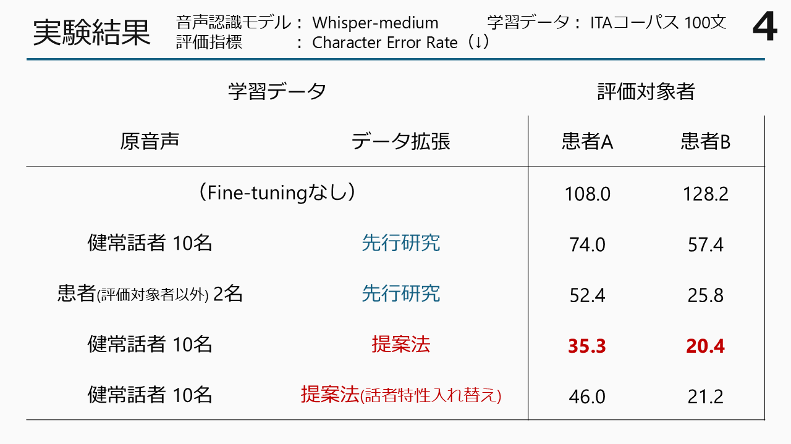
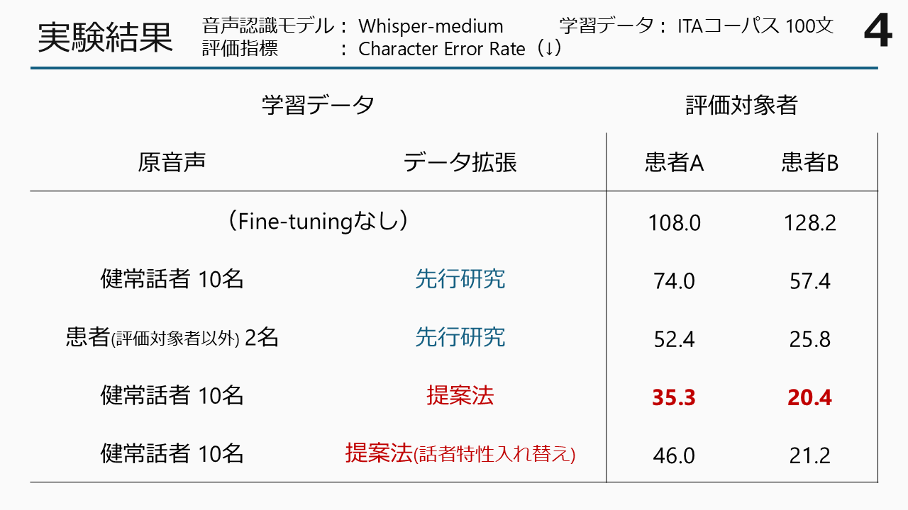
 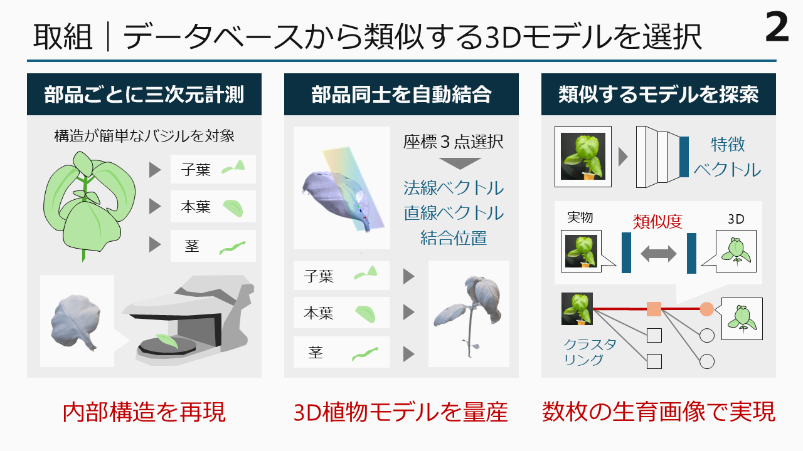
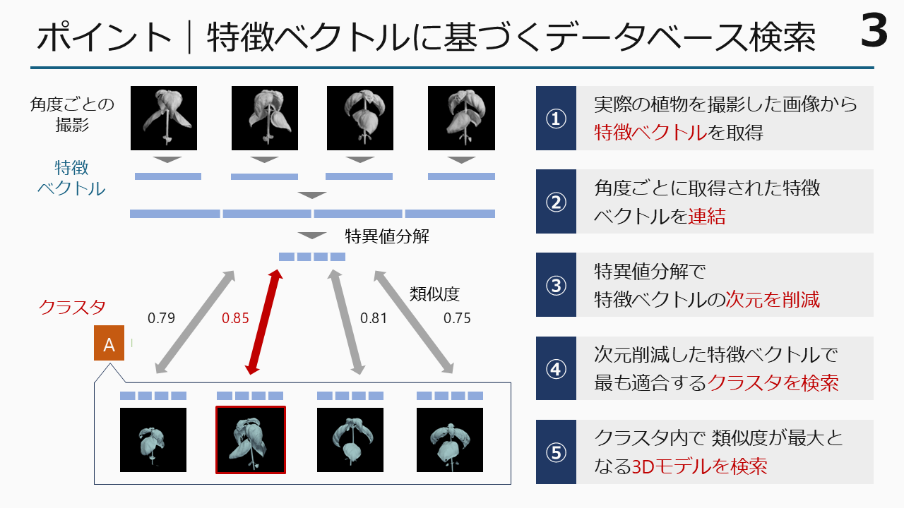
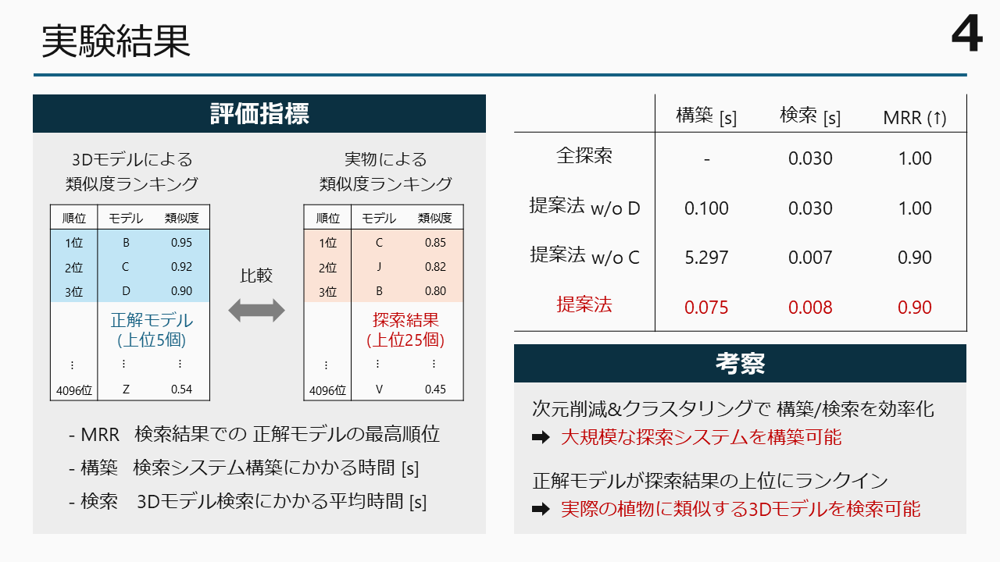
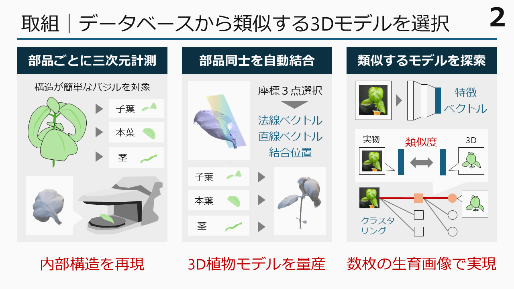
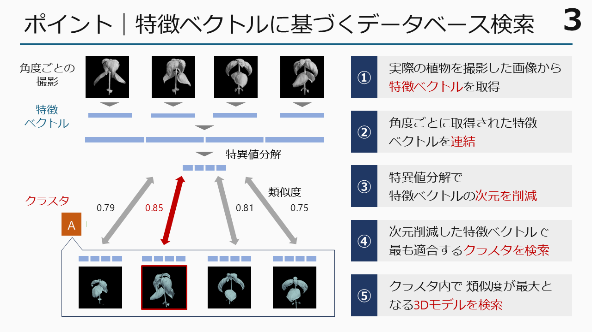
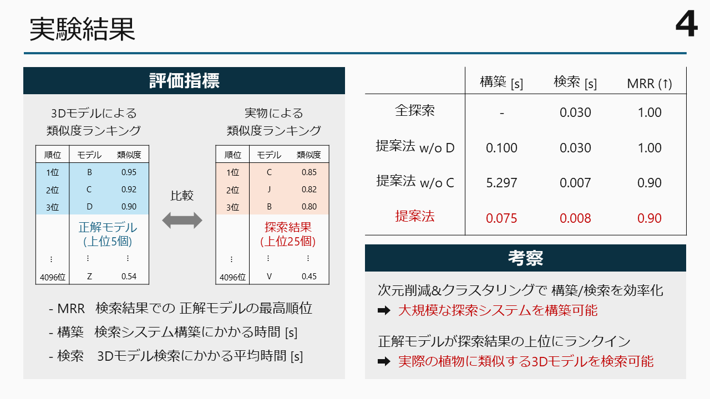
2025年9月10-12日
日本音響学会 2025年秋季研究発表会（東北工業大学）にポスター発表で1件参加しました．
2025年9月2-5日
第43回日本ロボット学会学術講演会（東京科学大学）に口頭発表で3件参加しました．
自己紹介
細田侑也
生年月日：1995.1.10
所属：立命館大学情報理工学部 助教
連絡先： y-hosoda [at] ritsumei.ac.jp
研究分野
学歴
2013年3月：岡山県立岡山朝日高等学校 普通科 卒業
2013年4月：大阪大学基礎工学部システム科学科 入学
2017年3月：大阪大学基礎工学部システム科学科 卒業
2017年4月：大阪大学大学院基礎工学研究科 修士課程 入学
2019年3月：大阪大学大学院基礎工学研究科 修士課程 修了
2019年4月：大阪大学大学院基礎工学研究科 博士後期課程 入学
2022年3月：大阪大学大学院基礎工学研究科 博士後期課程 修了
職歴
2022年4月〜2024年2月：豊橋技術科学大学 IT活用教育センター 助教
2024年3月〜2025年3月：大阪大学大学院基礎工学研究科システム創成専攻 助教
2025年4月〜現在：立命館大学情報理工学部 助教
競争的資金
所属学会
査読経験
教育活動
進行中の研究テーマ
ヘイトスピーチ音声を対象としたマルチタスク音声認識
大島 隆太郎（大阪大学 2025年度 M1）
情報処理学会（2025）
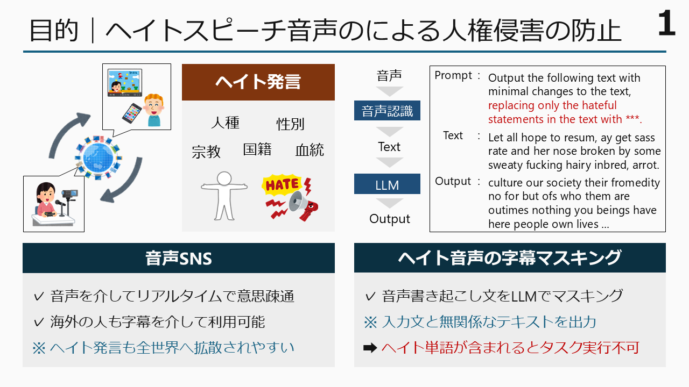
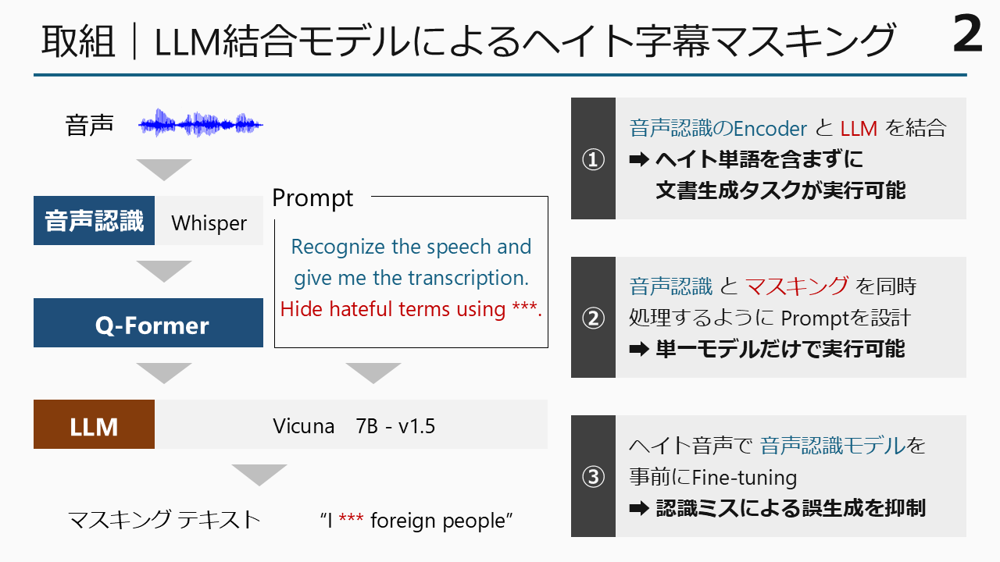
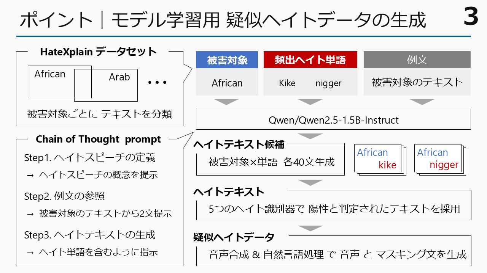

統合型敵対的生成ネットワークを用いた低解像度・低解像度画像のための画像強調
小林 寧生（東京科学大学 2025年度 M1）
情報処理学会（2025）APSIPA（2025）
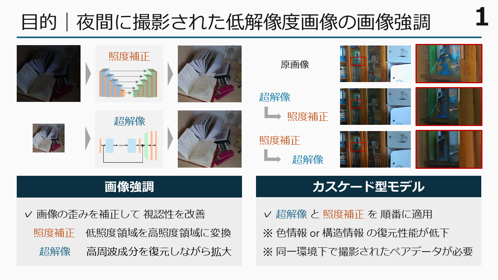
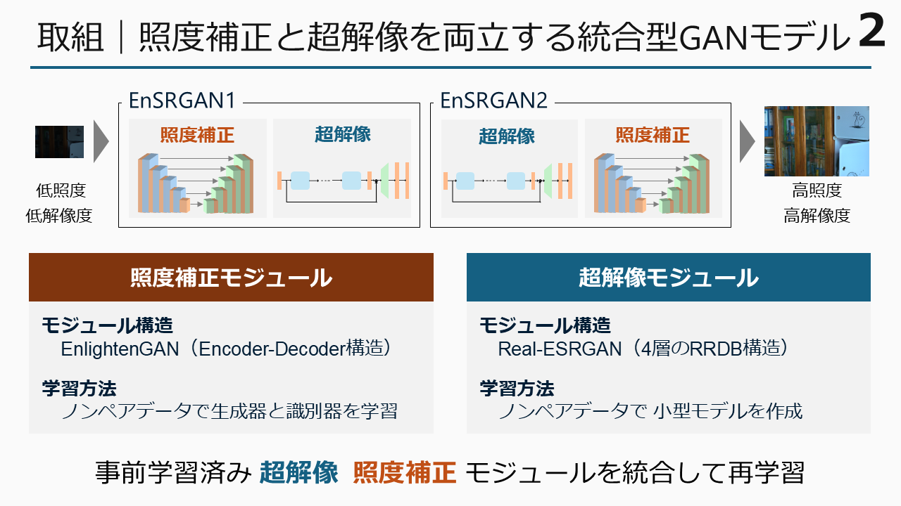


発話特性を考慮した構音障害患者のためのキーワード音声認識
戸叶 遥斗（大阪大学 2025年度 M1）
情報処理学会（2025）音響学会（2025）
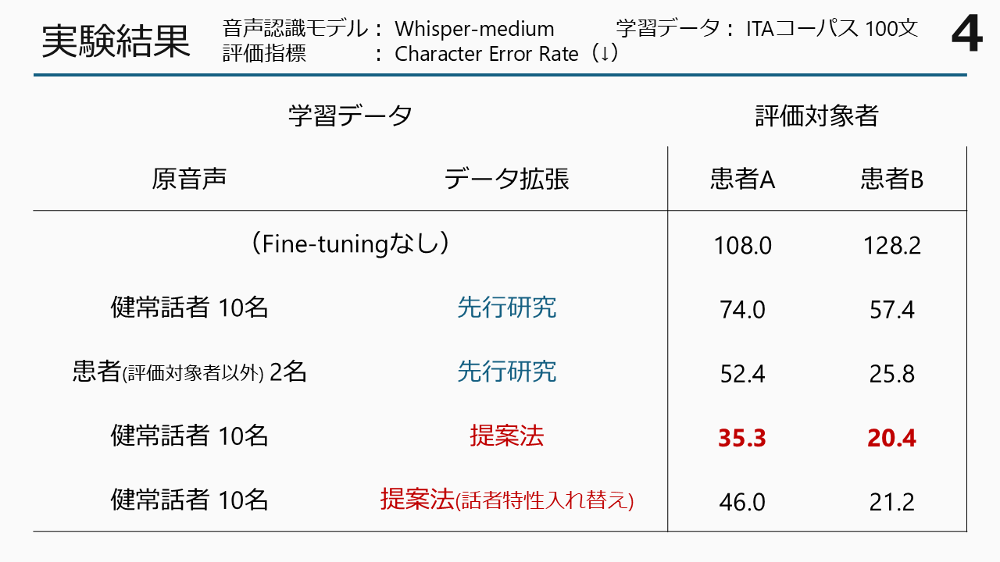
アカペラ楽曲を対象とした歌声評価システムの開発
高井 日美暉（立命館大学 2025年度 B4）
接触面の摩擦力を考慮した天井移動ロボットの移動制御
藤井 愛奈（立命館大学 2025年度 B4）
単一カメラを用いた自律型移動ロボットの走行計画
岡田 隆志（立命館大学 2025年度 B4）
バッテリー残量を考慮したマルチエージェント経路計画アルゴリズムの開発
廣澤 考冶（立命館大学 2025年度 B4）
ユーザの動作認識に基づく知能化空間によるサービス機能の提示
森田 勝之（立命館大学 2025年度 B4）
インフレータブル構造を搭載した家具運搬ロボットの開発
劉 沐恩（立命館大学 2025年度 M1）
ロボットアームを用いた絵画の特性に基づくモザイクアート生成
朴 峻佑（立命館大学 2025年度 M1）
周波数特性を考慮したスパース画像のためのVisual SLAM
河原 壱樹（立命館大学 2025年度 M1）
拡散モデルを用いたロボットアームによるグルーピング動作計画
Hai Minh Hieu Bui（立命館大学 2025年度 M2）
マルチカメラを用いたリアルタイム人物トラッキング
峯崎 翔琉（立命館大学 2025年度 M2）
テレプレゼンスロボットを用いたメタバース空間の提案
錦織 勇飛（立命館大学 2025年度 M2）
介護訓練ロボットにおけるVRフィードバックシステムの開発
遠藤 優貴（立命館大学 2025年度 M2）
移動機構の切り替えシステムを搭載した屋外移動ロボットの開発
鈴木 優介（立命館大学 2025年度 M2）
知能化空間における空間コーディングシステムの提案
吉田 集（立命館大学 2025年度 D1）
路肩の除草作業のための自律型移動ロボットの開発および分散制御
松下 優希（立命館大学 2025年度 D1）
筋電位信号を用いた把持補助デバイスの開発
Angga Rahagiyanto（立命館大学 2025年度 D2）
過去の研究テーマ
植物工場のための栽培環境モニタリングに関する研究

 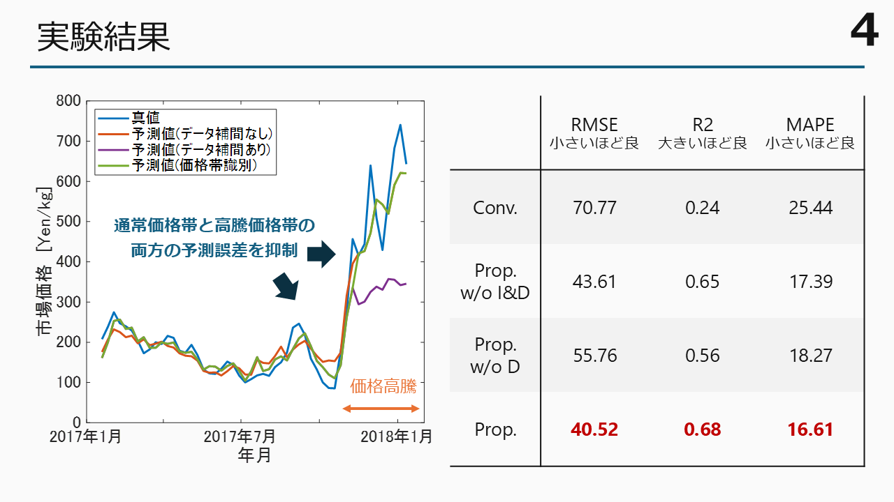
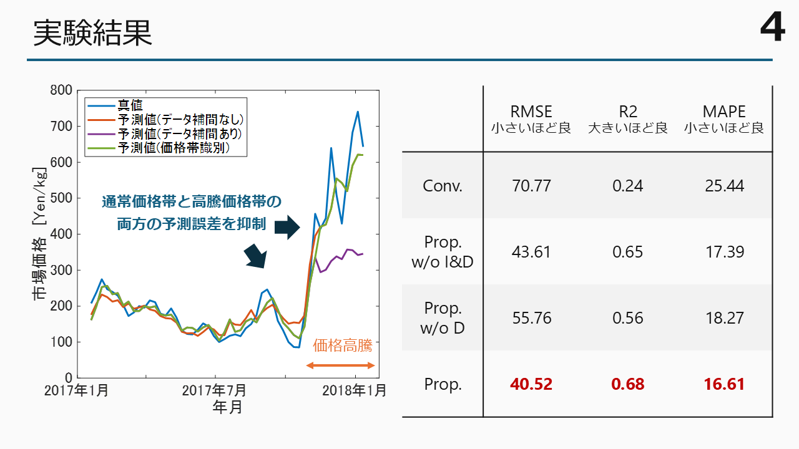
植物成長モデルを用いたレタスの新鮮重量予測
多田 桃大（豊橋技術科学大学 2022年度 学士）
IEEE Access,
情報処理学会全国大会(2023年),
CIGR(2022年)
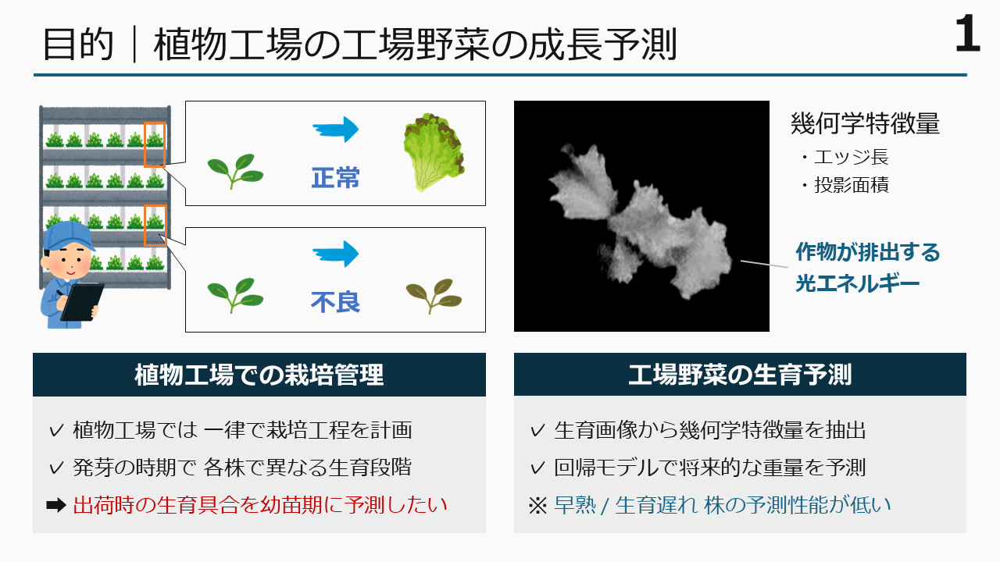
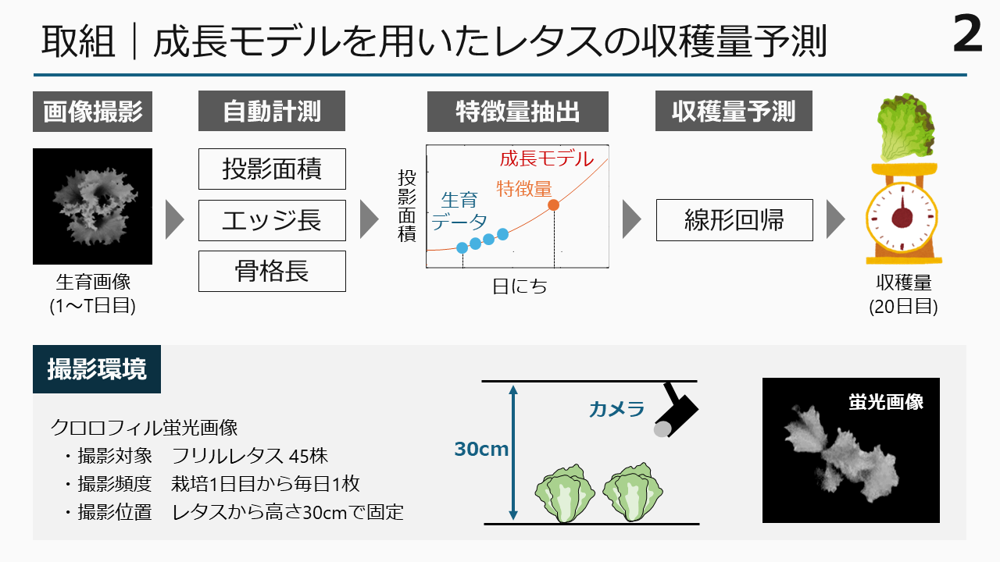
 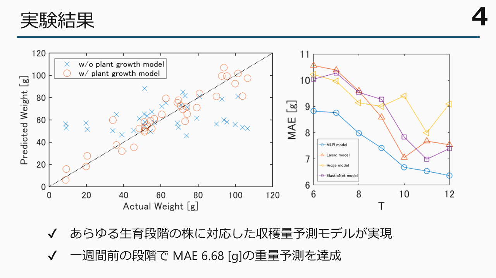
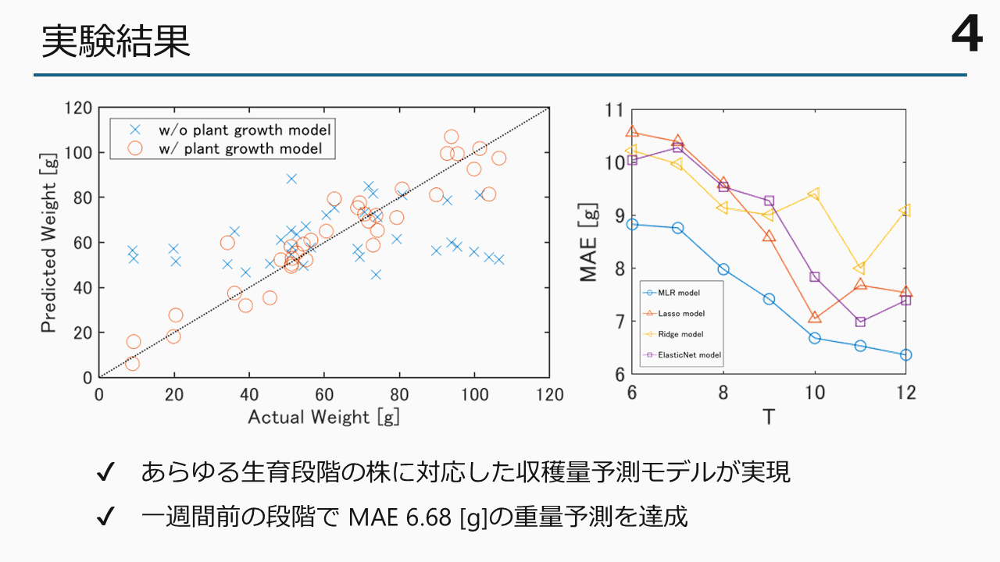
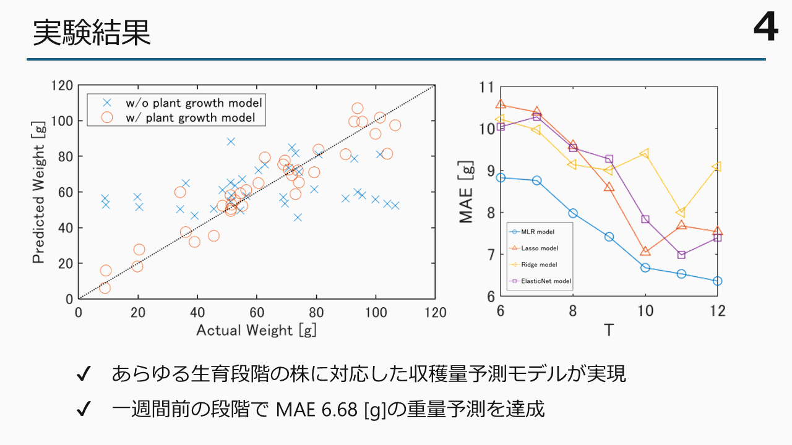
画像類似度に基づく部品組み立て式3D植物モデルの生成
BILGUUN GANZURKH（豊橋技術科学大学 2023年度 学士）
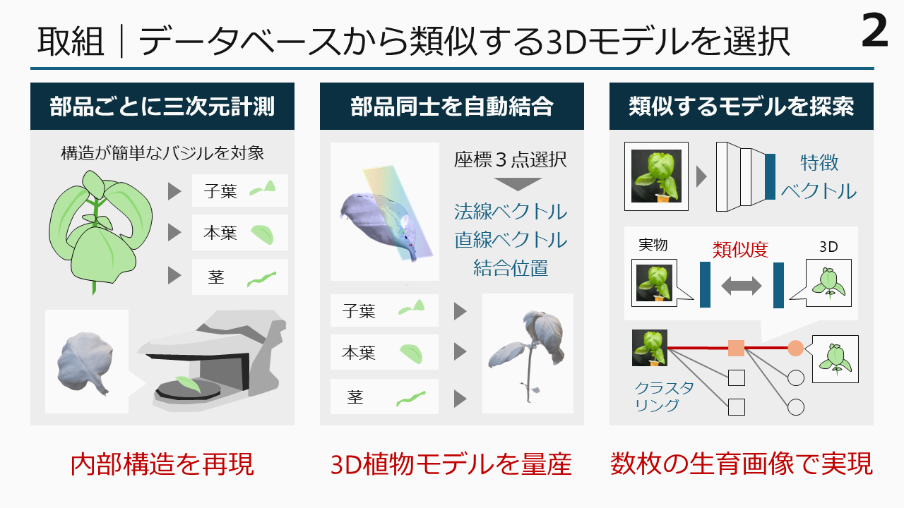
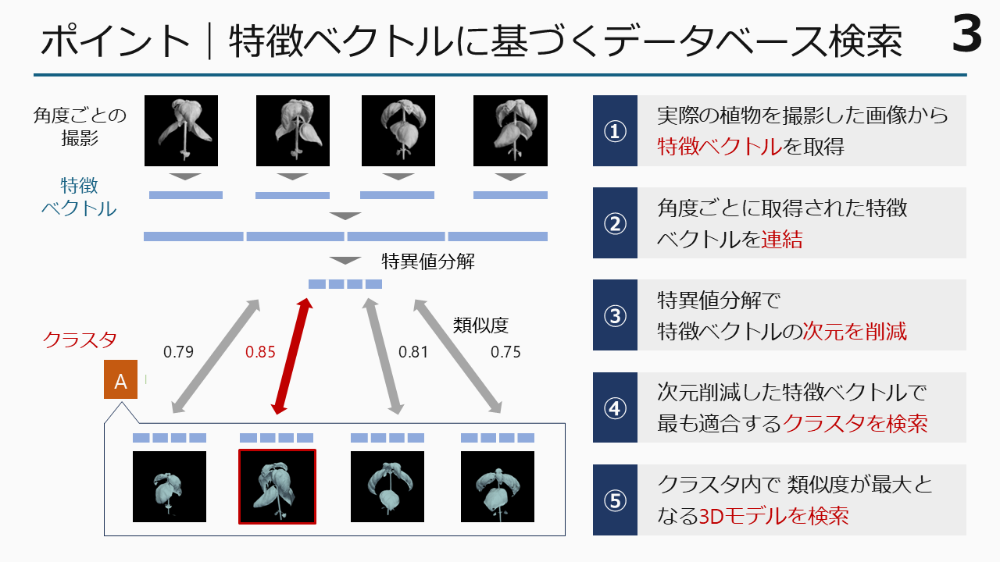
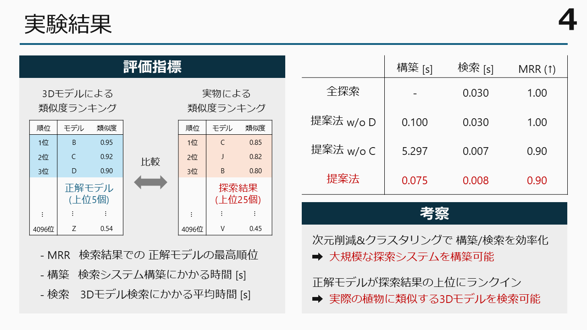

通話音声を対象とした音声強調に関する研究
正弦波モデルに基づく通話音声のピッチ推定
細田 侑也（大阪大学 2021年度 博士）
IEEE TASLP, APSIPA(2021)
正弦波モデルに基づく通話音声の帯域拡張
細田 侑也（大阪大学 2021年度 博士）
IEICE, EUSIPCO(2021)
データ埋め込みを用いた通話音声の帯域拡張
細田 侑也（大阪大学 2021年度 博士）
CSSP
音声を介したマルチメディア通信に関する研究
スペクトル包絡を考慮した画像音声変換
細田 侑也（大阪大学 2018年度 修士）
IEICE(Letter), NOLTA(2018年), 日本音響学会春季(2017年)